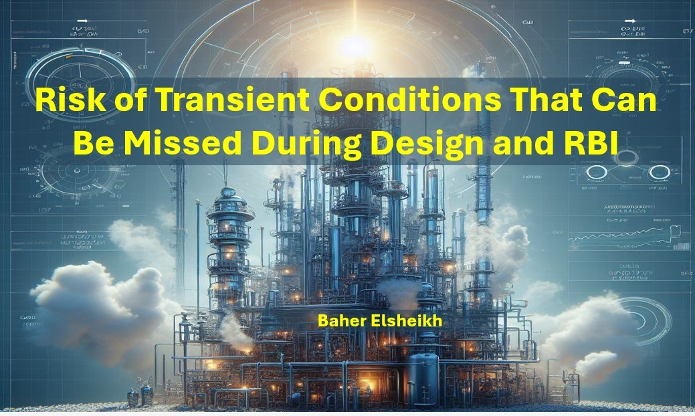
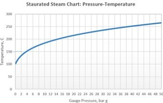
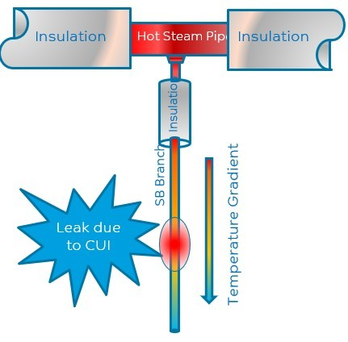
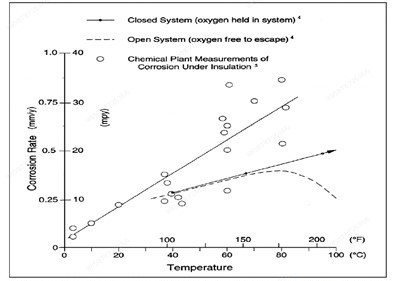
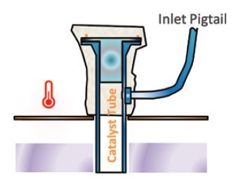
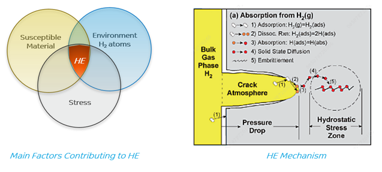
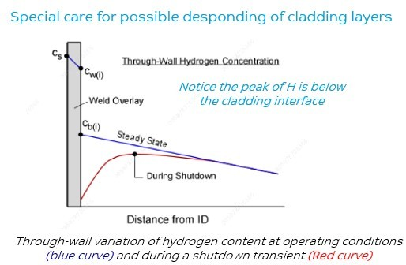
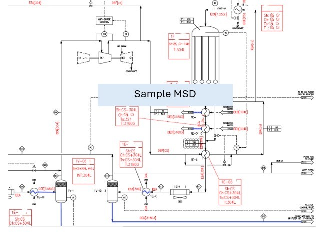

Risk of Transient Conditions That Can Be Missed During Design and RBI
Equipment is usually designed and inspected for its normal operating conditions. Many failures, however, start during start-up, shutdown, steam-out or other short periods that the design basis or the RBI study did not capture. This article lists common transient conditions and three case histories where they caused damage.

Background
The design of equipment shall account for all operating modes: normal operation, start-up, shutdown, upset and transient conditions.
Transient conditions take many forms: different operating modes, start-up, shutdown, start of run (SOR), end of run (EOR), dry run, thermal gradients, impingement areas and steam-out. Others come from the configuration of the equipment itself.
If the transient conditions of the equipment or part under analysis are not identified, and therefore not considered in the design or in the inspection plan, they can lead to premature failure.
Operating transient conditions
Some common examples:
- Minimum safe pressurization temperature for heavy wall Cr-Mo hydroprocessing reactors. These reactors are susceptible to temper embrittlement and hydrogen embrittlement, so the minimum safe pressurization temperature must be determined carefully.
- Start-up and shutdown of ferritic and duplex stainless steels. Operating within the 475 °C (885 °F) embrittlement range (370 °C to 538 °C) needs special attention during start-up and shutdown.
- Steam block in boiler coils. Improper warm-up, or inadequate drainage after shutdown, can lead to steam blockage in boiler coils.
- Dry-out in the convection sections of fired heaters and reformers. Coils in these sections can run dry, affecting their performance and integrity.
- Polythionic acid stress corrosion cracking (PASCC) of austenitic stainless steel. During start-up or shutdown, air and moisture on sensitized austenitic stainless steel heater tubes can form sulfur acids from the sulfide scale and cause PASCC.
- Accelerated corrosion during prolonged shutdown. Poor layup and preservation can cause accelerated corrosion when equipment is shut down for a long time.
- Different damage mechanisms on hot and cold sides. The hot side of a piece of equipment may see different damage mechanisms from its colder parts.
- Partial condensation in hot services. Partial condensation can cause thermal stresses or thermal shock.
- Vacuum from steam-out. When steam cools it condenses and the pressure falls. Equipment and piping are then subjected to vacuum, especially if venting is not sufficient to let air in and balance the pressure.

Case histories
Case 1: Corrosion under insulation in drain lines
Branch connections and dead legs with little or no flow cool along the small-bore branch, until part of it falls within the critical temperature range for corrosion under insulation (CUI).

The insulation material and the CUI inspection frequency were selected for the normal operating temperature, which is well above the CUI range, so they did not address the high CUI potential of these branches.
CUI in carbon steel is most severe from 77 °C to 110 °C, and in austenitic stainless steel from 60 °C to 175 °C. Within these ranges the corrosion rate increases with temperature, in a similar way to an open system (Figure 3).

Case 2: Thermal stresses and stress corrosion cracking in reformer tubes
In a top-fired reformer, the insulation around the top flange and part of a catalyst tube at the top of the reformer loosened and separated from the tube. The temperature on the reformer deck rose and operators could no longer work in the area. As a temporary measure, large fans were installed on the deck to lower the temperature.

A few months later, gas leaks were found from cracks that started at the weld between the top flange and the catalyst tube. The investigation and metallurgical analysis showed stress corrosion cracking: the process gas temperature had dropped below the dew point in this area.
Keeping the process gas temperature well above the dew point is essential to avoid this cracking. Similar problems can occur in refractory-lined parts such as transfer lines or the reformer casing, where the temperature at the back of the lining falls below the dew point.
Case 3: Hydrogen embrittlement
Hydrogen embrittlement, like other embrittlement mechanisms, takes place at temperatures below the normal operating temperature.
Hydrogen embrittlement (HE) is the loss of ductility of high strength steels, and of fracture toughness, caused by atomic hydrogen diffusing into the material. It can lead to brittle cracking.
Hydrogen is more soluble in steel and weldments at high temperature. When heavy sections operating at high temperature are cooled rapidly, HE can occur even under low applied stresses.

Clad equipment needs special care because of possible disbonding of the cladding: hydrogen pressure builds up between the substrate and the cladding, with its peak at the interface. The minimum depressurization temperature is a critical parameter for avoiding embrittlement.

Important notes
- Transient conditions can result from the configuration of the equipment as well as from the different operating modes.
- All operating modes and conditions shall be considered during design and material selection.
- The identification of damage mechanisms during RBI, or when preparing inspection plans, shall consider the configuration and actual design of the equipment.
- Damage mechanisms and corrosion loops identified only from P&IDs or material selection diagrams (MSDs) can miss transient conditions that come from the configuration of the equipment.

Conclusion
Identifying transient conditions, and considering them properly, is essential for robust equipment design and effective RBI. Engineers and inspectors must work together to make sure that every relevant operating scenario is accounted for, to minimise the risk of premature failure.
This article is for general engineering guidance. Apply it with the governing codes and the damage mechanism references used by your RBI programme, and the judgement of a qualified engineer.